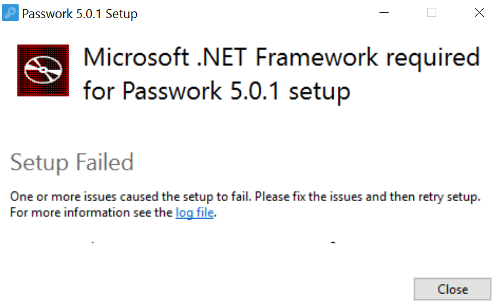
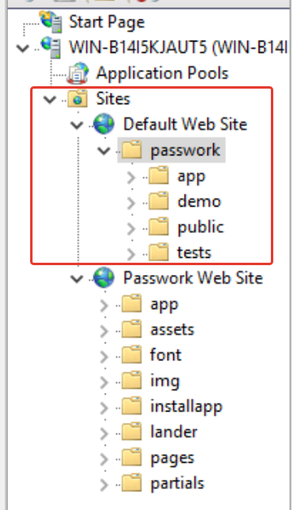
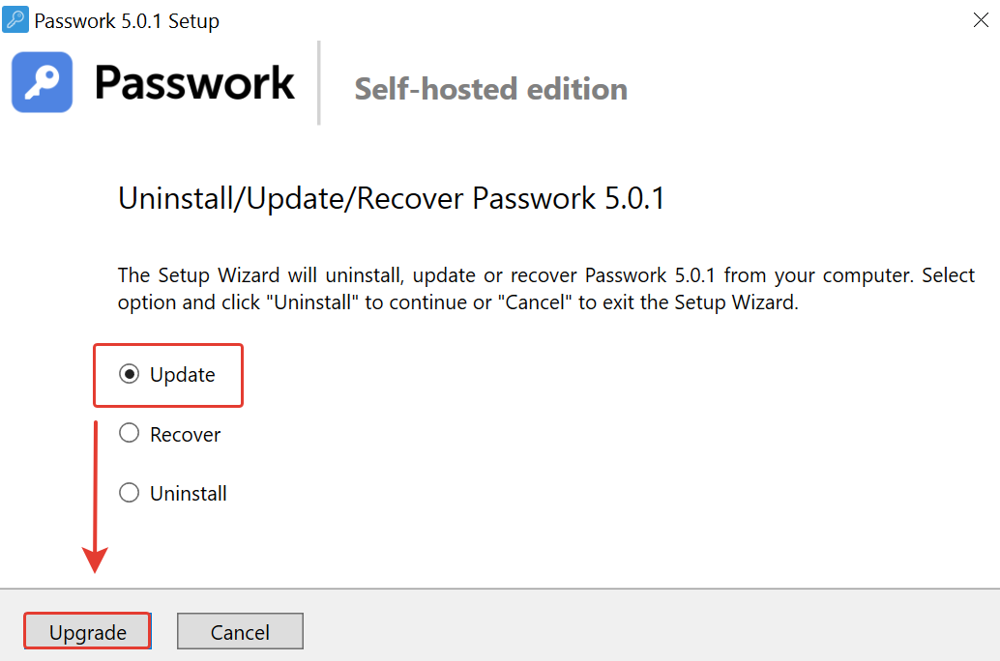
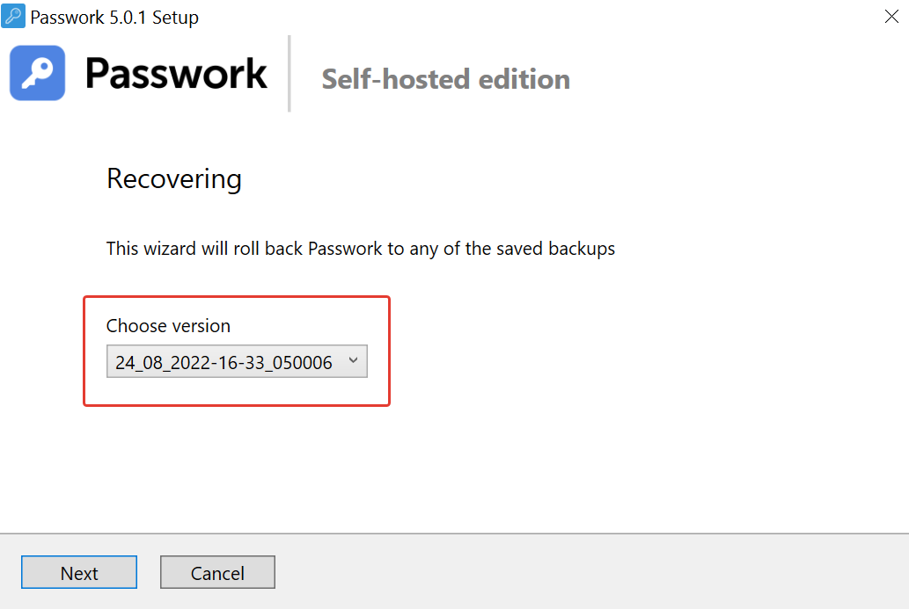

Установка на чистой ОС
- Для установки требуется NET Framework не ниже 4.5 
— NET Framework
- 1. При установке был выбран самоподписанный сертификат.
- 2. При нажатии на ярлык Пассворк откроется страница установки с портом 5353 — http://win-b14i5kjaut5.local:5353
- 3. В чек-листе будет отображено «HTTPS not used»
- 4. Чтобы использовать HTTPS, можно сменить порт 5353 на 443 — http://win-b14i5kjaut5.local:443
или указать протокол «HTTPS://» — https://win-b14i5kjaut5.local - 5. В чек-листе будет отображен «HTTPS»
— Cамоподписанный сертификат.
— Два «cайта» на IIS
— Удаление
Обновление Пассворк 4 → 5
- Обновление с версии 4.7.1 (HTTP) до 5.0.10 (HTTPS) прошло успешно.
— Пассворк 4.7.1
- При обновлении файлы из предыдущей версии остаются в корне /wwwroot, новая версия расположена в дополнительной подпапке /wwwroot/passwork.
— Файлы Пассворк из предыдущей версии
- При выборе обновления чекбокс отображает «Update», а кнопка «Upgrade». 
— Различные названия для Update и Upgrade
Обновление Пассворк 5.0.x до 5.0.10
- Если выбрать версию для обновления ниже 5.0.10, откроется лог-файл:
Ttrying to get PW_PassworkDownloadLink
There is no version in C:\inetpub\wwwroot\passwork\version
— Ошибка с лог-файлом
- В предыдущих архивах Пассворк нет файла «version». Содержимое файла — 050010
— Файл «version»
- Файл лицензии .keys удаляется после обновления. Содержимое файла config.ini соответствует файлу предыдущей версии.
— Файл лицензии
Восстановление.
- Если при обновлении Пассворк с версии 5.0.x было выбрано создание бэкапа, то в директории C:\inetpub\wwwroot\ будет создана папка backups.
- Папка backups содержит базу данных pwbox и архив предыдущей версии Пассворк.
— Создание бэкапа
- Если при обновлении Пассворк с версии 5.0.x была выбрана резервная копия, то при восстановлении можно выбрать резервную копию из списка. 
— Выбор резервных копий
Удобство пользования
- Есть кнопка «Cancel». Было бы удобно вернуться к предыдущим шагам с помощью кнопки «back».
— Кнопка «назад»
- После установки Пассворк нет возможности установить сертификат из файла.